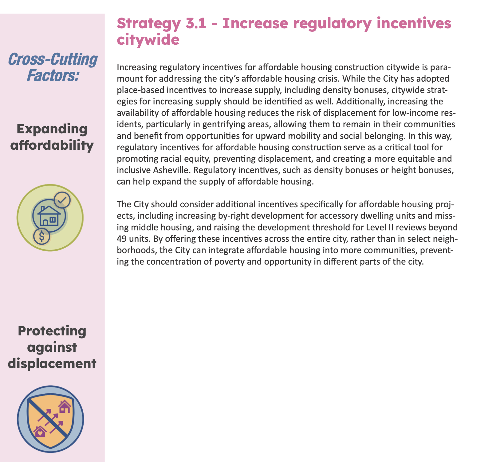
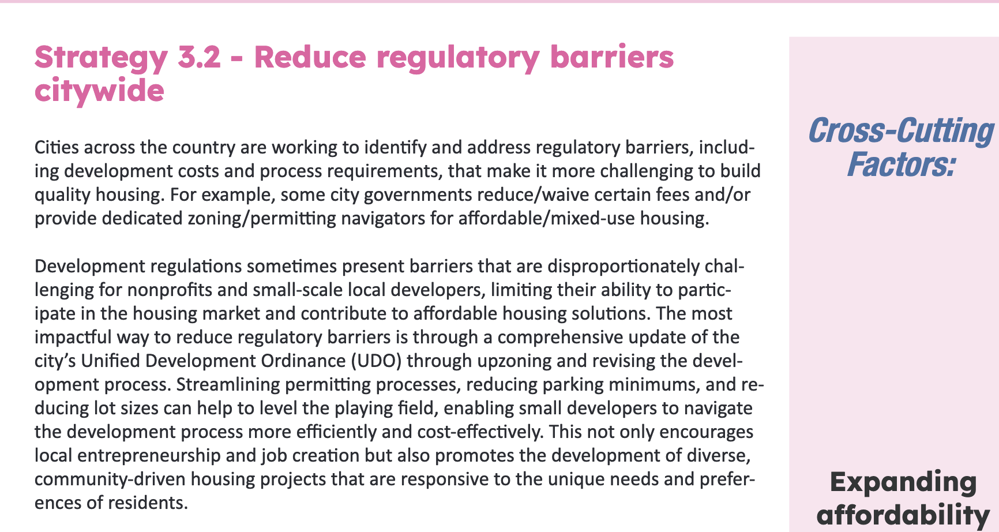
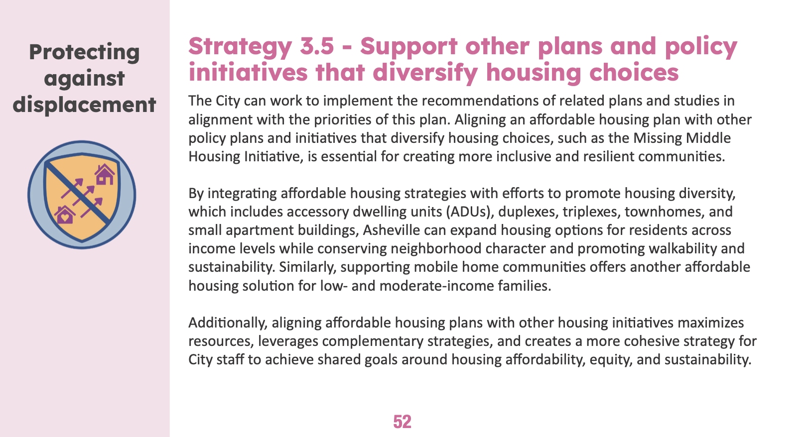
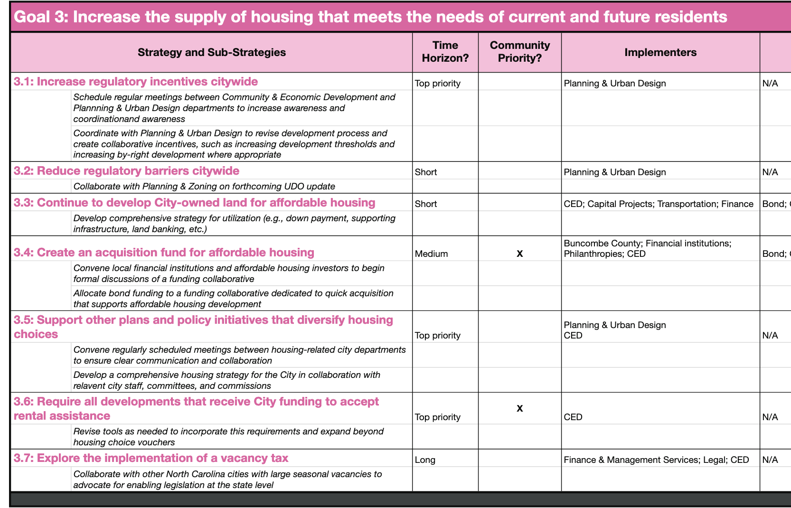

The Anti-Displacement Delay Delusion
October 23, 2025
This member commentary post does not necessarily reflect the views of Asheville For All or its members.
This month, at the October 1st Asheville Planning and Zoning Commission, the city’s Planning and Urban Design Department reiterated its stance on “missing middle”1 and other residential zoning code updates, plainly stating that no such changes would be implemented (barring “cleanups” of existing rules) until Asheville had put in place comprehensive “anti-displacement” measures.
Major changes to the city’s Unified Development Ordinance (UDO), which includes residential zoning districts, are effectively on hold.
Last year, I wrote a blog post explaining why this stance doesn’t make sense, and specifically, I tried to show how the city’s own commissioned “Missing Middle Housing Study and Displacement Risk Assessment” contradicts its position.
In short, it makes zero sense to say that you’re going to delay modest residential pro-housing reforms, such as allowing duplexes and quadplexes in core neighborhoods, or eliminating costly parking mandates in residential zones, until anti-displacement measures are enacted because the chief cause of displacement is the city’s inability to change its outdated and exclusionary land use codes! Besides that, the Missing Middle Housing Study and Displacement Risk Assessment plainly states that these kinds of reforms are anti-displacement measures, that they are highly effective ones, and that delaying pro-housing reforms is not an effective approach to anti-displacement.
Today, I want to do a similar thing, and examine the city’s Affordable Housing Plan, or “AHP.” This plan was developed by Enterprise Advisors, in concert with the city, and was funded by a grant from Dogwood Health Trust. It was released in 2024, just prior to Hurricane Helene, and so it may have caught fewer eyeballs than if the storm hadn’t happened.
What Asheville’s Affordable Housing Plan (AHP) Actually Says About Land Use Reform
First a disclaimer: I believe that if cities want “truly affordable housing”—that is, below market rate and income-restricted—they need to put their money where their mouth is. The AHP makes strong recommendations for putting more money behind programs such as the Housing Trust Fund, which I’ve written about recently, and that would be great. (I also continue to believe that using property taxes and municipal bonds for this purpose is good and just, and that property tax rates should really be higher.)
In this post, however, I’m going to just be focusing on the AHP’s recommendations around land use reform and related “regulatory barriers” that prevent housing supply and restrict the city’s diversity in housing types.
* * *
The land-use related strategies in the AHP are all collected under “Goal Three: Increase the supply of housing that meets the diverse needs of current and future residents.” If you’re following along, the section begins on page 50.
The first page of the section, “Strategy 3.1,” calls for “increas[ing] regulatory incentives citywide” to promote different kinds of infill homes.

The page breaks down into two ideas. First, it suggests that any “place-based” incentives that currently exist should be spread “citywide.” The examples of existing incentives, such as “density bonuses” and “height bonuses” make this section a bit outdated—the city effectively replaced density bonuses with a different set of carrots and sticks in March. But the broader idea is fine—the more that incentives might apply to different geographical areas, the more likely they’ll be utilized. (And as I’ve previously discussed and we’ll discuss below, there are reasons pertaining to displacement risk why this is a good idea too.)
Second, the page suggests that the city might come up with “additional incentives” for the creation of more affordable housing. That might include “increasing by-right development for accessory dwelling units and missing middle housing.” The report again stresses the need for these incentives to be applied “citywide,” as a means to bring “opportunity” to different parts of the city, as well as to prevent pockets of poverty.
It’s notable here that the AHP is saying exactly what the Missing Middle Housing Study and Displacement Risk Assessment is saying. First, the city needs to legalize the creation of different kinds of infill housing types—in particular, those that lend themselves to smaller square-footages and will increase the number of people and families that will live on a given acre of land—and make the permitting process for such homes consistent and less costly. Second, neighborhoods that otherwise fit the bill for such changes—that is, they are served by infrastructure and perhaps they are close to downtown or a bus line or a jobs center—all need to be included. And third, that such incentives bring opportunity to all varieties of neighborhoods.
Consider the case of accessory dwelling units (ADUs) or “backyard cottages.” If a cash-strapped retiree homeowner wants to lease a portion of their property, that’s a way for them to tap into their equity while aging in place. Contrary to this idea, the conventional wisdom in Asheville appears to be that allowing such an incentive would make “vulnerable” or “legacy” neighborhoods more at risk of displacement, rather than less so!
Note also, as shown in the image above, that the AHP is explicit that these kinds of pro-housing supply moves, when applied to a broad array of residential neighborhoods, are intended to “[protect] against displacement.”

The next strategy under Goal Three, “reduce regulatory barriers citywide,” doubles down on the idea of making infill housing more likely to appear in our residential neighborhoods by increasing carrots and reducing sticks. It states that the city should address “development costs” and “process requirements” that make it challenging for those seeking to build affordable housing. It continues:
The most impactful way to reduce regulatory barriers is through a comprehensive update of the city’s Unified Development Ordinance (UDO) through upzoning and revising the development process. Streamlining permitting processes, reducing parking minimums, and reducing lot sizes can help to level the playing field, enabling small developers to navigate the development process more efficiently and cost-effectively. This not only encourages local entrepreneurship and job creation but also promotes the development of diverse, community-driven housing projects that are responsive to the unique needs and preferences of residents.
A point this page is making is that while large developers with big pockets can absorb the costs to build large apartment complexes on commercial corridors, where land is more expensive, smaller developers that might be able to utilize cheaper land to build smaller scale multifamily in residential zones are blocked from doing so.
Again, this section echoes the recommendations of the Missing Middle Housing Study, which called for both addressing parking minimums, as well as minimum lot sizes. And notably, the city has decided, even after the AHP was released, to NOT address parking minimums in residential zones, believing contrarily and against evidence that this would cause displacement.
Note also that the plan is once again calling for “citywide” change.
Let’s take a look at one more page under Goal Three. “Strategy 3.5” says to “support other plans and policy initiatives that diversify housing choices.”

Here, the AHP is once again calling for Asheville to look at, and act upon, the 2023 Missing Middle Housing Study and Displacement Risk Assessment. In fact, the title of this strategy is a bit funny since the Missing Middle study is the only “other” plan and/or policy initiative that this section ever refers to. And once again, the AHP denotes this section as including a strategy that “protect[s] against displacement.”
The Conflicting Meanings of the Word “Affordable”
It might be important to note that the AHP’s definition of the word “affordable” appears to be more capacious than most housing policy documents in Asheville and elsewhere in the country allow. Somewhat confusingly, the word can both mean “relative to one’s income, housing costs that are 30% or less,” or it can also mean something more specific and technical: “income-restricted, and below market rates.” Lately, in everything from newspaper articles to policy briefs, it’s almost given that the latter definition will be used.2
(You can see the AHP’s more capacious use of the term in different ways, for example, when it refers to mobile homes as one affordable option. See also page 47, where it indicates that “affordable” is an umbrella term that includes “naturally occurring affordable” homes. The AHP is quite consistent too in referring to “subsidized” housing explicitly as such, rather than simply calling it “affordable.”)
Our understanding of how the document uses the term “affordable” matters, because it shapes how we interpret some of the admittedly thinly fleshed out descriptions for each of the subgoals under “Goal 3.” In some spots, the AHP does appear to be calling for an “integration” of subsidy tools like the Housing Trust Fund, or other tools like density bonuses which mandate income restricted housing, when it comes to boosting housing supply in residential neighborhoods citywide. (Also see for example, Appendix B on page 82.) On the other hand, armed with an understanding that housing may be more affordable “by design,” the AHP also seems to be saying much more.3 Consider, for example, that the call to “support” the “Missing Middle Housing Initiative” clearly goes beyond the suggestion to “integrate” existing city funding tools. ADUs and duplexes would never qualify for density bonuses, nor would they ever be included under any existing city programs such as the Housing Trust Fund.4
Understanding the Mechanics of Displacement
How can the AHP be so sure that pro-housing policies will reduce displacement? I believe that it’s because the study takes a somewhat comprehensive approach to understanding what displacement is.
In the aforementioned blog post examining the 2023 Missing Middle Housing Study and Displacement Risk Assessment, I noted that the document didn’t really do a good job on defining “displacement.” And I also implied that when displacement doesn’t get well-defined, there’s potential for myths to spread. (Put plainly, I think that there’s a common, surface-level understanding, one that is incorrect, that simply says that new construction creates neighborhood-wide displacement, period.)
The good news is that the AHP is a little better on this. It divides displacement into four categories. The first two categories are the most relevant for us, and they are:
Physical displacement [which] occurs when residents cannot stay in their homes because a landlord chooses not to renew their lease, evicts them, or a property is demolished.
Economic displacement [which] occurs when existing residents are priced out of housing in their community, whether due to increases in rents, property taxes, insurance costs, or otherwise.
After defining these terms on page 34, the AHP doesn’t ever refer back to them. We have to read between the lines a little bit, for example, when the AHP says that supporting the “Missing Middle Housing Initiative” will help protect residents against displacement (52), we’re talking about more than just “physical displacement,” which I think, again, is the one that people immediately go to in their heads.
In any case, there does seem to be an important question that the AHP, or really anyone else, doesn’t want to ask: which of these displacement varieties is the actual problem now?
I fully sympathize with the concern around the potential for physical displacement. I think it’s worth stating that while physical displacement cannot ever be eliminated completely—a point that I made here last year—it is a tragedy to have policy-induced physical displacement.5 This is why the AHP and the Missing Middle Displacement Risk Assessment are both careful to argue for broadly applied land use reform. Evidence is clear that this is the way to do upzoning without causing displacement.6
But economic displacement, I think it’s safe to argue, is the chief problem Asheville is facing now, and the one that Asheville has been facing for at least the last decade.7
This may be why the AHP doesn’t just recommend such pro-infill strategies as increasing by-right development and otherwise “supporting” the “missing middle initiative.” They label such action as ”top priority” (64). There’s nothing more urgent than “top priority”!
(It’s worth looking at the plan’s prioritization lists in full, by the way, not just at those listed under “Goal 3,” to see just how much the report prioritizes supply initiatives relative to other programs. There’s no way to read through the entire list and come away with the idea that programs like “missing middle” and citywide ADU reform are supposed to be delayed so that others can be implemented first.)8

If you’re already really in the weeds of housing policy, you might find there’s a lot that the AHP doesn’t say. It doesn’t talk about “moving chains,” or the underlying role of land economics in housing and construction costs, or the prospects for social housing in Asheville. But it’s pretty clear that the AHP is saying that pro-supply land use reforms and other regulatory reforms to allow more housing in our core neighborhoods cannot wait.
Asheville’s Leaders Have Homework To Do
I hope that it’s clear now that the city’s official position on pro-housing reforms—the idea that they must be perpetually delayed to allow for “anti-displacement measures” to be implemented—is not just wrong, it’s nonsensical and an absolute muddle of concepts. It’s a statement that doesn’t make sense given the city’s own studies, its own terms, and its own goals.
And note that they’ve been using this “anti-displacement” excuse for more than a year now, with no hint of a timeline for the future.9
It’s hard not to get cynical about all of this. It appears as though one of two things are going on:
- Asheville leadership—council, the city manager, and/or staff heads—aren’t reading the reports that they commission very closely. Or at all. There’s homework going undone. Everyone’s nodding along in agreement to whatever sounds most like what they think might have been the content of the thing that they never read.
- Asheville leadership is kicking the can down the road for fear of political backlash. In doing so, they’re knowingly spreading false conclusions about the relationship between land use reform and outcomes that matter to peoples’ lives.
Either way, every month that reform doesn’t happen means that it’s going to take longer and longer for the crisis to ease. Each month, renters fork out a sizable chunk of their earnings to landlords. Each month rentiers capture the incomes of hard working people, and each month more people find themselves priced out of the city.
-
If you’re not sure what “missing middle” means, you can start with the info page that we set up a couple of years ago here. ↩
-
This blog post from Darrell Owens does a nice job of explaining some of the confusion around the word “affordable.”
I find the way that newspaper reporting has wholly swallowed the newer definition of the word to be particularly interesting. It’s not uncommon to find a Citizen Times article that simply and pointedly states, when a new controversial housing project is being proposed or debated, that there will be “no affordable units.” This of course begs the question, if somewhat tongue-in-cheek, “if these homes are absolutely unaffordable to anyone, who the hell’s going to live there?” ↩
-
Opticos, the company behind the phrase “missing middle,” used to very intentionally describe middle housing as “affordable by design.” They appear to have moved away from such language so as not to confuse those that understand “affordable” in the more specific usage of the word. ↩
-
For a good example of how “missing middle” contributes to affordability, broadly defined, see a recent study on Portland’s “Residential Infill Project” where it’s been reported that homes for sale have averaged $100,000 less than traditional single family homes in the same neighborhoods. (Interestingly, the study cites the importance of caps on square-footage, which I advocated for here.)
And tangentially, we know that infill housing and more efficient residential land use adds to lower housing costs in ways beyond decreasing the housing costs of brand-new homes; see a recent Pew report on this here and a more comprehensive and academic meta-study here. ↩
-
The classic example of policy induced displacement or gentrification is “urban renewal”, the mid-century national phenomenon of bulldozing low-income neighborhoods, but there are other more recent examples, such as the New York City policy under Mayor Bloomberg to downzone wealthier neighborhoods while upzoning lower-income ones at the same time. This is the exact opposite of the aforementioned “broad” approach favored by housing policy analysts and that which Asheville For All advocates for. ↩
-
See here, here, and here. Asheville’s own Missing Middle Housing Study discusses the need for “broader geographic application” of zoning changes on page 97.
It’s worth noting that some policy analysts convincingly argue that physical displacement itself, as a phenomenon, is a kind of side effect of pent-up demand, which is to say, housing scarcity; and also that phenomena like displacement and gentrification—which often get confused with one another—are both downstream from exclusionary land use, alongside other factors such as wealth and income inequality. See here, here, and here. ↩
-
I wrote a little bit about physical and economic displacement, relative to this point, in a letter published in this week’s Mountain Xpress. ↩
-
On the other hand, It’s unclear to me why the mandate under Goal Three to “reduce regulatory barriers citywide” is listed as having a slightly lower priority, although it may be because this sub-goal recommends a complete rewrite of the city’s UDO. The AHP seems to define this particular subgoal as above and beyond those proposed in the Missing Middle Housing Study. Contrary to a “top priority,” the AHP defines a “short” time horizon as indicating a “2-3 Year Priorit[y]” (63). ↩
-
The idea was raised at the September 10, 2024 Asheville City Council meeting, when a couple of residential zoning reforms were continued until early in the following year, with the idea being that anti-displacement measures were going to be implemented by the end of the year. I don’t recall whether staff or council raised the idea first, and it’s quite possible that the idea was raised prior to that date. ↩
This member commentary post does not necessarily reflect the views of Asheville For All or its members.